RED BULL RACING
Meet Our Drivers
Drivers 2024

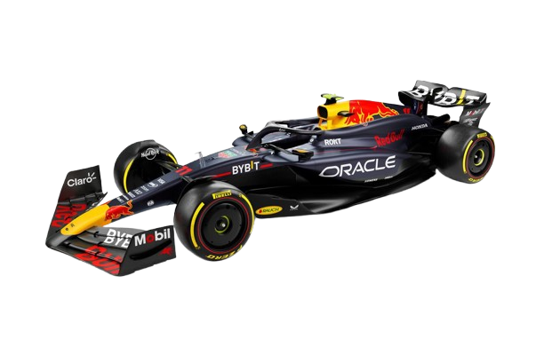
RB20
Drivers 2023
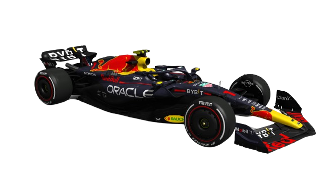
RB19
Drivers 2022
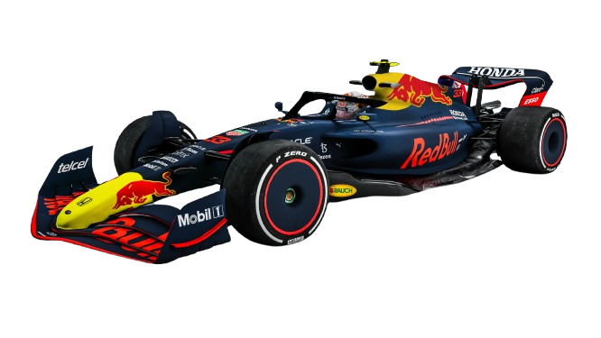
RB18
Drivers 2021
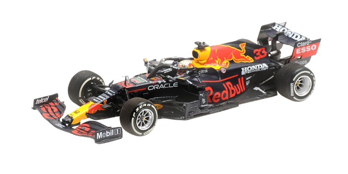
RB16B
Drivers 2020
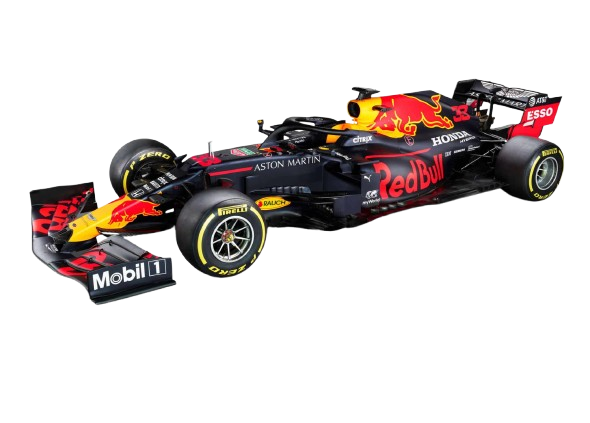
RB16
Drivers 2019
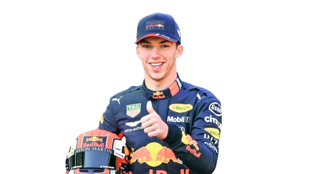
( Left )Alexander Albon Ansusinha
23 March 1996
London, England
View Details( Right )Pierre Jean-Jacques Gasly
7 February 1996
Rouen, France
View Details
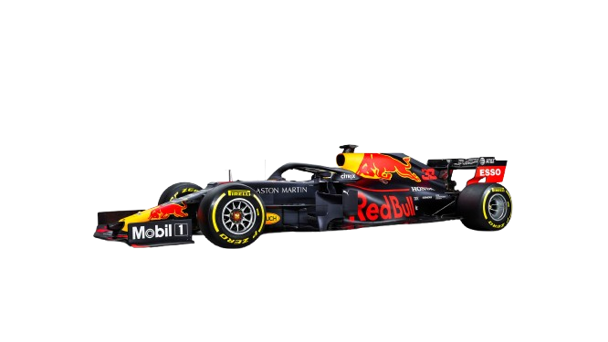
RB15
Drivers 2018
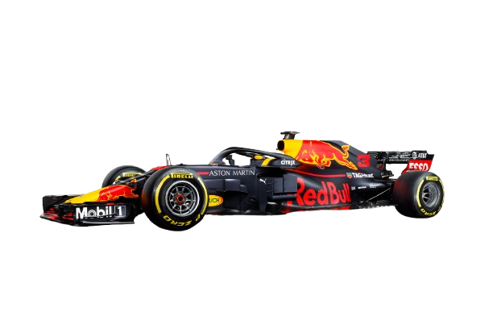
RB14
Drivers 2017
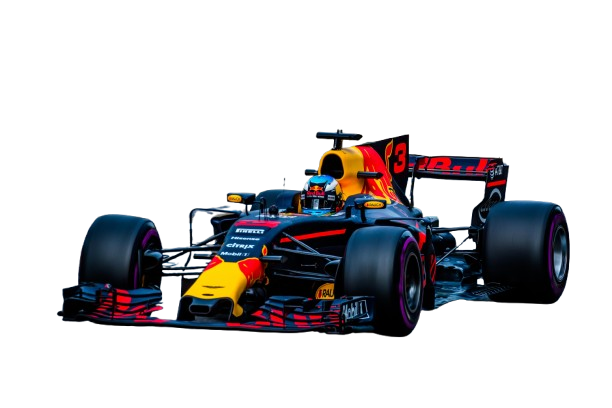
RB13
Drivers 2016
 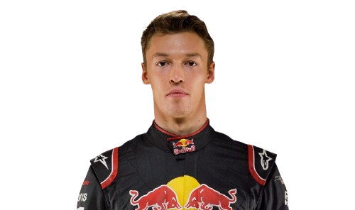
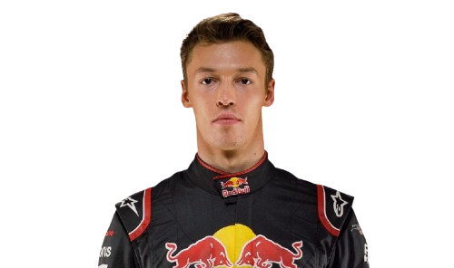
( Left )Max Emilian Verstappen
30 September 1997
Hasselt, Belgium
View Details( Right )Daniil Vyacheslavovich Kvyat
26 April 1994
Ufa, Bashkortostan, Russia
View Details
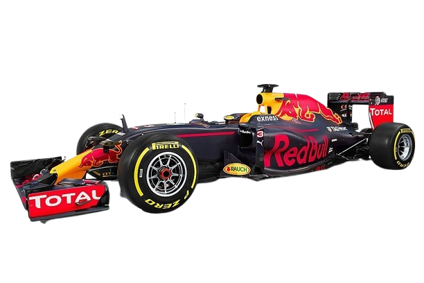
RB12
Drivers 2015
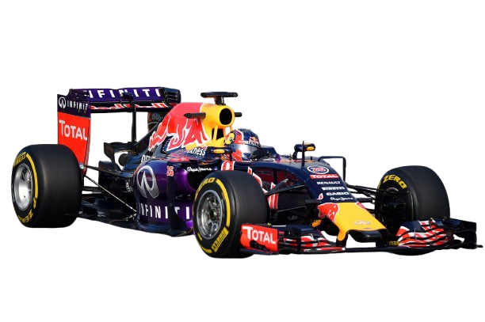
RB11
Drivers 2014
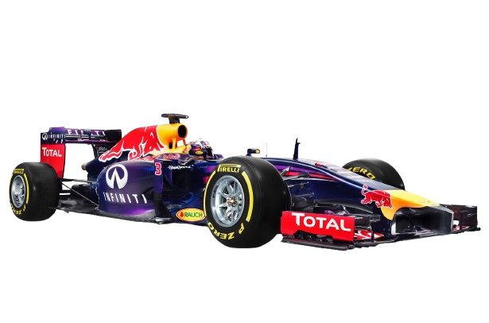
RB10
Drivers 2013
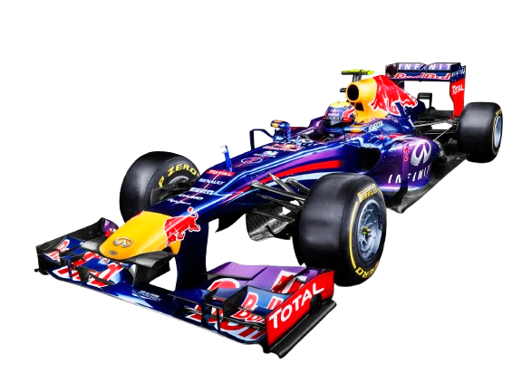
RB9
Drivers 2012
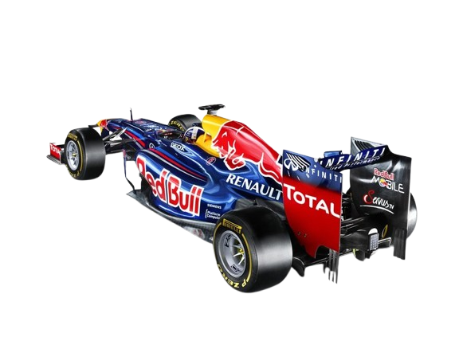
RB8
Drivers 2011
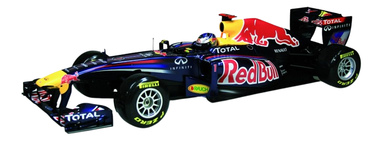
RB7
Drivers 2010
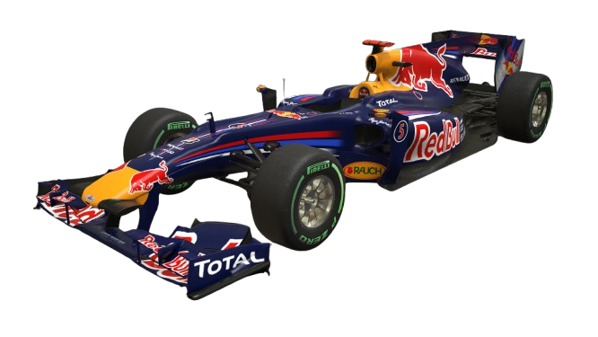
RB6
Drivers 2009
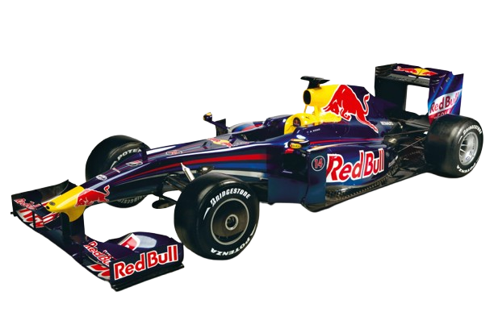
RB5
Drivers 2008
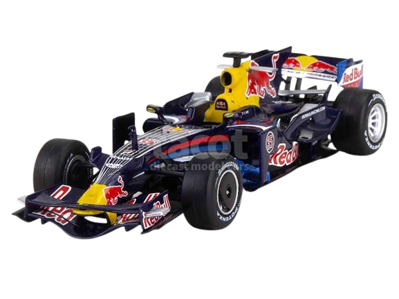
RB4
Drivers 2007
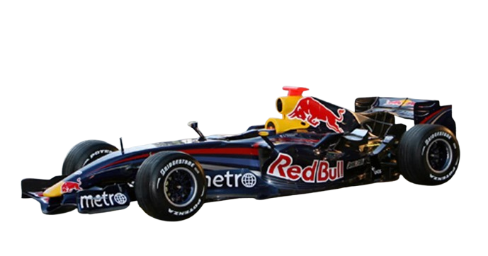
RB3
Drivers 2006
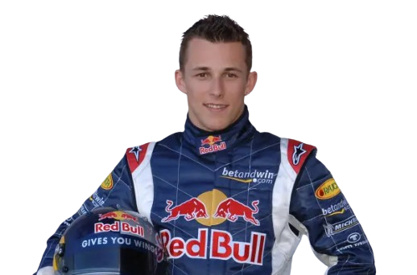
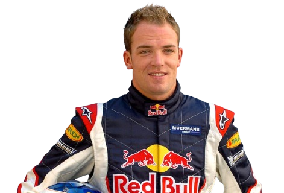
( Left )Christian Klien
7 February 1983
Hohenems, Austria
View Details( Right )Robert Michael Doornbos
23 September 1981
Rotterdam, Netherlands
View Details
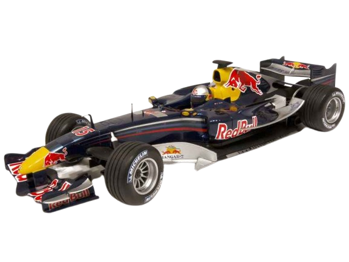
RB2
Drivers 2005
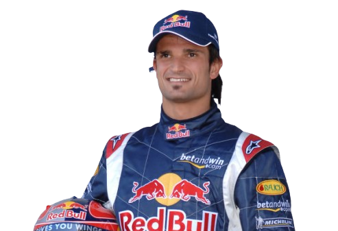
( left ) Christian Klien
7 February 1983
Hohenems, Austria
View Details( Right ) Vitantonio Liuzzi
6 August 1980
Locorotondo, Italy
View Details
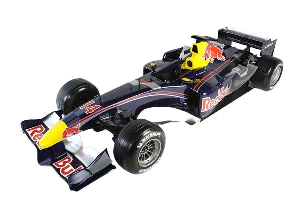